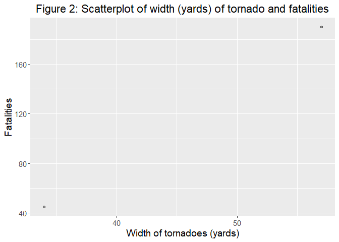
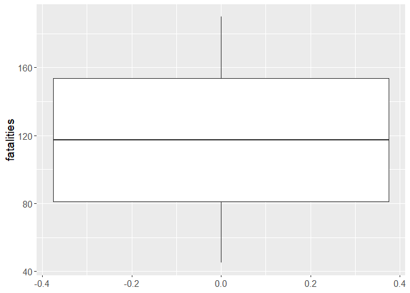

The goal of predicttornado is to provide functions that help with the data analysis of predicting the number of fatalities using length and width of tornadoes based on tornado data.
Installation
You can install the development version of predicttornado like so:
# install.packages("devtools")
devtools::install_github("DSCI-310-2024/predicttornado")Example
Refer to the vignettes to view more examples on how to use our package functions.
raw_df <- data.frame(
om = c(156, 189, 26),
yr = c(1950, 1951, 1952),
mo = c(10, 11, 12),
dy = c(1, 9, 20),
date = as.Date(c("2021-03-26", "2022-03-26", "2024-03-01")),
time = as.POSIXct(c("12:00:00", "13:00:00", "21:00:00"), format = "%H:%M:%S"),
tz = c("America/Chicago", "America/Chicago", "America/Chicago"),
datetime_utc = as.POSIXct(c("2021-03-26 12:00:00", "2022-03-26 13:00:00", "2024-03-01 21:00:00")),
st = c("OK", "NC", "TX"),
stf = c(0, 0, 0),
mag = c(0, 0, NA),
inj = c(23, 233, 405),
fat = c(45, 190, 201),
loss = c(23, 40, 56),
slat = c(0, 0, 0),
slon = c(0, 0, 0),
elat = c(0, 0, 0),
elon = c(0, -50, -60),
len = c(201, 340, 100),
wid = c(34, 57, 71),
ns = c(0, 0, NA),
sn = c(0, 0, 0),
f1 = c(0, 0, 0),
f2 = c(0, 0, 0),
f3 = c(0, 0, NA),
f4 = c(0, 0, 0),
fc = c(FALSE, FALSE, TRUE)
)This is a basic example which shows you how to load the package and use one of its functions, process_data, which processes and cleans your data before using it for data analysis.
library(magrittr)
library(predicttornado)
tornado_df <- process_data(raw_df)This package can also be used to create visualizations like scatterplots using create_scatterplotand boxplots using boxplot_viz.
create_scatterplot(tornado_df, width, fatalities) +
ggplot2::labs(x = "Width of tornadoes (yards)", y = "Fatalities",
title = "Figure 2: Scatterplot of width (yards) of tornado and fatalities")
boxplot_viz(tornado_df, fatalities)
You can easily create a linear regression model and fit it to your data with the function fit_linear_model:
lm_data <- fit_linear_model(fatalities ~ width + length, tornado_df) |>
predict(tornado_df) |>
dplyr::bind_cols(tornado_df)
#> Warning in predict.lm(object = object$fit, newdata = new_data, type =
#> "response", : prediction from rank-deficient fit; consider predict(.,
#> rankdeficient="NA")predicttornado in the R package ecosystem
predicttornado may seem like a package very similar to other R packages. For example, we have three visualization functions that resemble ggplot2. However, they are all slightly different and more tailored to our data analysis project. create_scatterplotand boxplot_viz have specific visualization size settings and title and aesthetics that render your visualizations more pleasing.
Moreover, accuracy_plot is very different because even though it uses ggplot2 functions, it creates a scatterplot that compares the accuracy of a linear regression model to the actual observations.
process_data is also different from dplyr’s select and filter as it combines these different functions to create an efficient data processing function for ease of data analysis. Additionally, it is a specific processing function for analysis tornado data in predicting fatalities.
Lastly, fit_linear_model is also different from other linear regression functions such as lm from stats for example because it combines multiple steps required in creating and fitting a linear regression model and then automatically outputs the model coefficient and intercept.